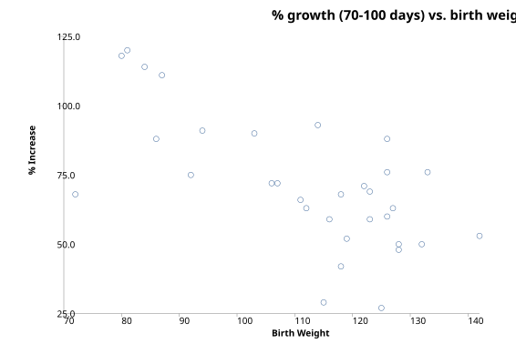

Regression and Correlation
Menu location: Analysis_Regression and Correlation
- Simple linear and correlation
- Multiple (general) linear
- Regression in groups
- Principal components
- Linearized
- Polynomial
- Logistic regression
- Conditional logistic regression
- Poisson regression
- Probit analysis
- Spearman's rank correlation
- Kendall's rank correlation
- Nonparametric linear regression
- Cox regression
Regression
Regression is a way of describing how one variable, the outcome, is numerically related to predictor variables. The dependent variable is also referred to as Y, dependent or response and is plotted on the vertical axis (ordinate) of a graph. The predictor variable(s) is(are) also referred to as X, independent, prognostic or explanatory variables. The horizontal axis (abscissa) of a graph is used for plotting X.

Looking at a plot of the data is an essential first step. The graph above suggests that lower birth weight babies grow faster from 70 to 100 than higher birth weight babies. Linear regression can be used to fit a straight line to these data:
Equation: Y = a + bx
-
b is the gradient, slope or regression coefficient
-
a is the intercept of the line at Y axis or regression constant
-
Y is a value for the outcome
-
x is a value for the predictor
The fitted equation describes the best linear relationship between the population values of X and Y that can be found using this method.
The method used to fit the regression equation is called least squares. This minimises the sum of the squares of the errors associated with each Y point by differentiation. This error is the difference between the observed Y point and the Y point predicted by the regression equation. In linear regression this error is also the error term of the Y distribution, the residual error.
The simple linear regression equation can be generalised to take account of k predictors:
Y = b0 + b1x1 + b2x2 +...+ bkxk
Assumptions of general linear regression:
-
Y is linearly related to all x or linear transformations of them
-
all error terms are independent
-
deviations from the regression line (residuals) follow a normal distribution
-
deviations from the regression line (residuals) have uniform variance
A residual for a Y point is the difference between the observed and fitted value for that point, i.e. it is the distance of the point from the fitted regression line. If the pattern of residuals changes along the regression line then consider using rank methods or linear regression after an appropriate transformation of your data.
Correlation
Correlation refers to the interdependence or co-relationship of variables.
In the context of regression examples, correlation reflects the closeness of the linear relationship between x and Y. Pearson's product moment correlation coefficient rho is a measure of this linear relationship. Rho is referred to as R when it is estimated from a sample of data.
-
R lies between -1 and 1 with
-
R = 0 is no linear correlation
-
R = 1 is perfect positive (slope up from bottom left to top right) linear correlation
-
R = -1 is perfect negative (slope down from top left to bottom right) linear correlation
Assumption of Pearson's correlation:
-
at least one variable must follow a normal distribution
N.B. If R is close to ± 1 then this does NOT mean that there is a good causal relationship between x and Y. It shows only that the sample data is close to a straight line. R is a much abused statistic.
r² is the proportion of the total variance (s²) of Y that can be explained by the linear regression of Y on x. 1-r² is the proportion that is not explained by the regression. Thus 1-r² = s²xY / s²Y.